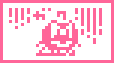

<HTML><BODY>
<CENTER>
<TABLE WIDTH=640 BACKGROUND="header.gif">
<TR><TD HEIGHT=82>&nbsp &nbsp<A HREF="index.html"></A></TD></TR></TABLE>
</BODY></HTML><HTML>
  <HEAD>
   <TITLE>Arukotchi translated!</TITLE>
   <LINK REL=stylesheet HREF="styles.css" TYPE="text/css">
  </HEAD>
  <BODY BACKGROUND="stars.gif" bgproperties="fixed">
    <CENTER>
    <TABLE WIDTH=640 BACKGROUND="aru/aru_back.gif" BORDER=2px BORDERCOLOR="#669966">
     <TR>
      <TD>
  <B CLASS="third">Deai Hakken!!! Arukotchi: Questions and Answers</B><BR>
  Ohimetchi, a Deai Hakken!!! Arukotchi expert, will answer some questions about Arukotchi in this section.  If you read it, maybe you too will become an Arukotchi expert.<BR>
  <B CLASS="first">Question 1: Why does Oyajitchi get happy when I take the surume?</B><BR>
  Hohohoho [er, just so you know, this is a kind of evil snobby girl laugh], don't you know why?  You only find surume if you've given Oyajitchi your name.  In order to better his chances with you, he's run on ahead and dropped the surume for you to find.  Then when you take it, you can give it to him to eat and your love-love rating with him will increase.  If you don't want Oyajitchi to propose to you, don't pick up the surume.<BR>
  <B CLASS="first">Question 2: At night when I check the screen, there's a UFO flying across it...</B><BR>
  If you see the UFO, you're really lucky.  If you haven't given your name to a certain gotchi-boy, you won't get to see the UFO.</B><BR>
  <B CLASS="first">Question 3: I can't seem to meet Obaketchi#2...</B><BR>
  Obaketchi#2 will only come out during a certain window of time.  During the course of one day, there is only a short period of time when he will appear, so it's very difficult to meet him.  He is a ghost, so maybe when it's dark you'll have a better chance of meeting him...</BR>
  <B CLASS="first">Question 4: Ohimetchi seems to be depressed...</B><BR>
  What?!  You've seen me doing that?!  When I do this, it's not because I'm depressed over some silly little thing, it's because I haven't gotten a proposal!  In the evening, a gotchi-boy is going to go to Arukotchi and propose to her...  Argh!<BR>
  <B CLASS="first">Question 5: Ohimetchi is on the screen, but nothing is happening</B><BR>
  Ohohohoho!  You haven't been walking much lately, have you?  When you don't walk with Arukotchi, I appear on the screen.  But don't worry, if you start walking with Arukotchi again, things will return back to normal.
  <BR><BR><BR>
  <B CLASS="third">When you should use the all-reset function:</B><BR>
  These are the only times that you should use the all-reset function:
  <UL TYPE=DISC>
    <LI>When you first start the unit or when you change the batteries</LI>
    <LI>When you want to erase all your data and start all over again</LI>
  </UL>
  To activate the all-reset function:<BR>
  While pressing the Y button, press the reset button and release it and then release the Y button.<BR>
  <BR>
  <B CLASS="third">When you should use the reset function:</B><BR>
  These are the times when you should use the reset function:
  <UL TYPE=DISC>
    <LI>When the unit has been subjected to a strong shock/bump and none of the functions will work or the screen has gone all funny</LI>
  </UL>
  To activate the reset function:<BR>
  Simply press the reset button and the start-up screen should appear.
<BR><BR>
  <CENTER>
  <A HREF="arukotchi5.html"></A>
  </TD>
   </TR>
  </TABLE>
 </BODY>
</HTML>
<HTML><BODY>
<CENTER>
<TABLE WIDTH=640 BACKGROUND="footer.gif">
<TR><TD HEIGHT=58><CENTER><A HREF="index.html"></A></TD></TR></TABLE>
</BODY></HTML>
